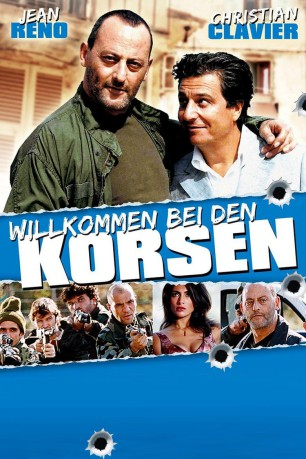

#8969 Willkommen bei den Korsen
 
 IMDB-Wertung: 5.8 / 10
IMDB-Wertung: 5.8 / 10  Metascore: 0
Metascore: 0 
Der Pariser Privatdetektiv Remi Francoise , alias Jack Palmer, betrachtet sich seIbst als relativ geschäftstüchtig. So wittert er natürIich das schnelle GeId aIs er einen - in seinen Augen bequemen Auftrag - eines kIeinen, undurchsichtigen Provinznotars übernimmt: Er solI den gebürtigen Korsen Ange Léoni aufspüren und ihn über eine Erbschaft informieren.Kaum auf Korsika angekommen, wird das vermeintliche Kinderspiel sehr schneIl zu einem HindernisIauf. Denn zusätzlich zu den Eigenarten der Korsen, die Remi die Arbeit erschweren, scheint der Gesuchte auch in alIerIei Machenschaften auf seiner HeimatinseI verstrickt zu sein. Er ist nahezu unauffindbar und es interesseiren sich seltsamerweise auch die Korsische Mafia und die Französische PoIizei für ihn. Auf einmaI halten Entführungen, VerfoIgungsjagden und Explosionen Palmer in Atem, ebenso wie die schöne Léa ...
Jahr: 2004
Dauer: 93 Minuten
FSK: 6
Land: Frankreich Studio: EuroVideoTonspuren: DTS - ,
Untertitel:
Auflösung: 1080p (1920x816) Größe: 6666 MB
Genre: Action, Komödie, Krimi
Regisseur: Alain Berbérian
Drehbuch: Christian Clavier
Soundtrack: Alexandre Desplat
Darsteller:
 Christian Clavier als Rémi François, dit Jack Palmer
Christian Clavier als Rémi François, dit Jack Palmer Jean Reno als Ange Leoni
Jean Reno als Ange Leoni Caterina Murino als Léa
Caterina Murino als Léa- Marie Paquim als Bernadette
- Didier Flamand als Dargent
- Pierre Salasca als Matéo
- Eric Fraticelli als Figoli
- Alain Maratrat als De Vlaminck
- François Orsoni als Balducci
- Nathanaël Maïni als Grappa
- Albert Dray als Le capitaine de gendarmerie
- Daniel Delorme als Doumé
- Guy Cimino als Borgnoli
- Jo Fondacci als Diazep
- Philippe Guerrini als Le Marseillais
- Tzek als Bruno
- Elisabeth Kaza als Josepha
- Jean-François Perrone als Indépendantiste réunion
- Jean-Emmanuel Pagni als Indépendantiste Corsa Nazionale
- Christian Gautier als Le gendarme
- Xavier de Guillebon als Le propriétaire Villa Pinzuts
- Nathalie Krebs als La propriétaire Villa Pinzuts
- Antoine Belloni als Homme pari Borriacciu 2
- Raoul Curet als Homme pari Borriacciu 3
- Nicolas Guy als Le gendarme radar 1
- Olga Sékulic als La gendarmette radar
- Didier Ferrari als Pierrot - patron hôtel
- Luc Palun als Indépendantiste Canal Inattendu
- Corinne Ciancioni als La pharmacienne
- Robert Lucibello als Pruzzati
- Laurent Barbolosi als Le patron du café Borracciu
- Vincent Solignac als Le consul de Belgique
- Dominique Vincenti als Le chanteur du Pinocchio
- Jeanne de Sailly als Anna Maria
- Gaspard de Sailly als Sanpierro
- Karine de Demo als La cliente bouledogue
- Michel Delgado als Le client bouledogue
- Marc Vadé als Faux touriste port n°2
- Raymond Aquaviva als L'avocat de l'accusation
- Patrizia Poli als L'avocate de la défense
- Yves Borrini als Le juge
- Jean-Pierre Lanfranchi als Patron hôtel Rémi Rossignoli / Groupe polyphonique Tavagna
- Christiane Conil als Maria Leoni
- Francis Coppola als Vieux monsieur rue Pinocchio
- Catherine Gavrilovic als Fiorina
- Marie-Ange Geronimi als Lucia Borgnoli
- Juliette Poissonnier als Mademoiselle Brêche
- Laurence Colussi als L'hôtesse
- Hélène Tabbah als La petite vieille Rossignoli
- François Berlinghi als Le patron du café Rossignoli
Datei: X:\2004(N-Z)\Willkommen bei den Korsen (2004, FSK6, 1920x816).mkv seit 16.05.2018
Festplatte: HD 2003-2004-2005(A-F)
 Es gibt insgesamt 54 Filme in der Gruppe '2004(N-Z)'
Es gibt insgesamt 54 Filme in der Gruppe '2004(N-Z)'